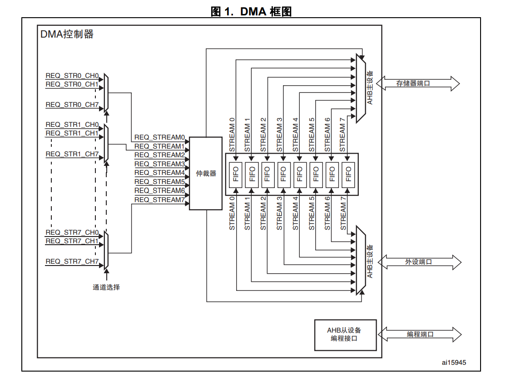
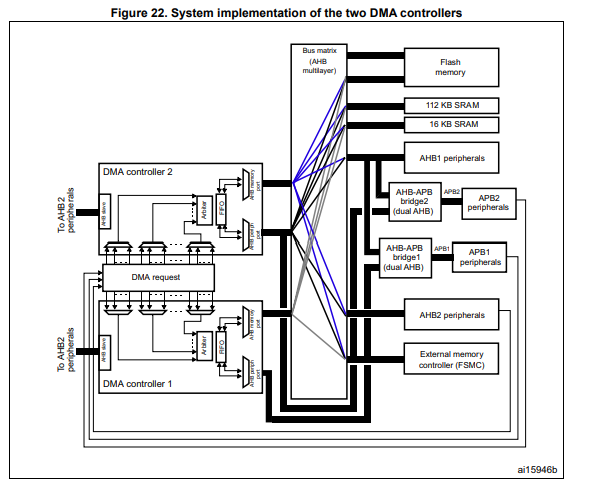
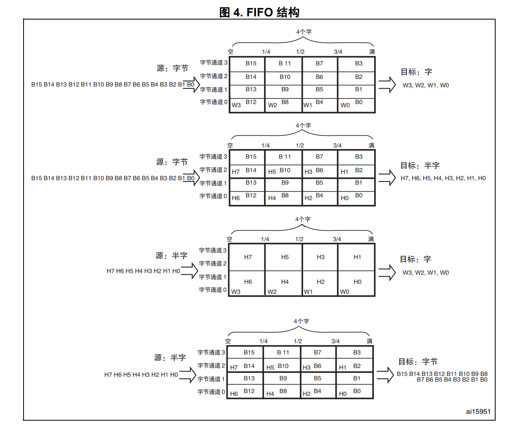
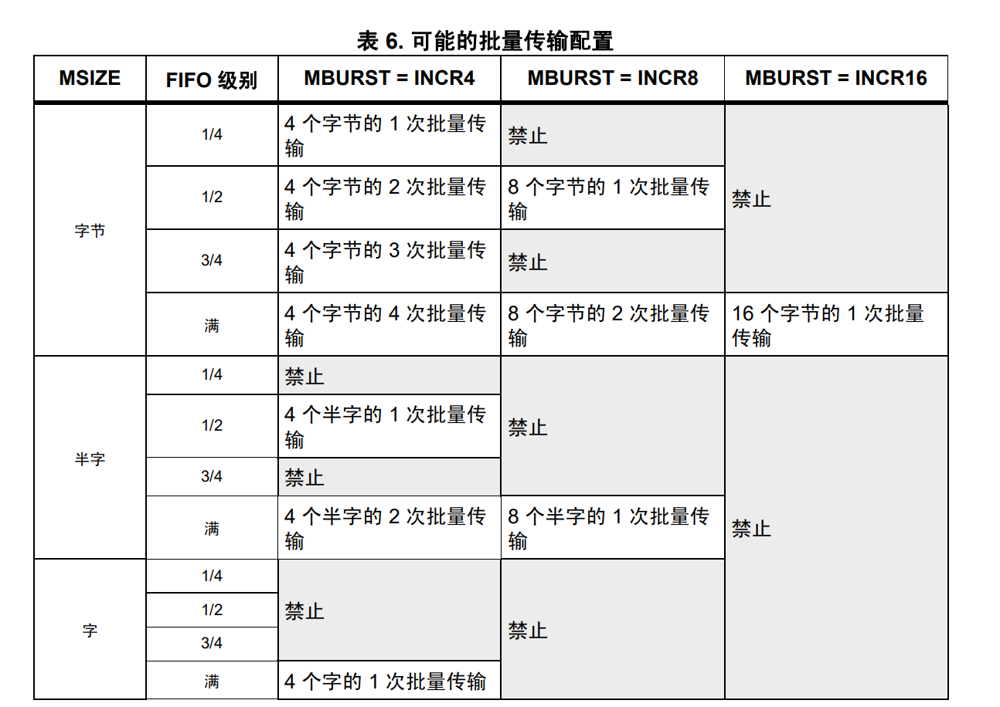
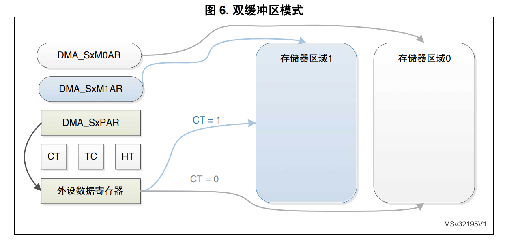

关于DMA（二）
本文最后更新于：2023年11月13日 上午
1. DMA 数据流/通道
- 以STM32F2为例介绍数据流和通道的概念。
- 一个DMA控制器可以提供8个数据流，每个数据流有8个可选通道。
- 在一个数据流中，同一时刻，只有一个通道/请求是有效的，是一个多选1的MUX结构。
- 8个数据流有8个请求，根据DMA内部的仲裁算法得到响应哪个请求。请求间的优先级可以通过软件编程配置，一共有4个等级。软件优先级一致时，可由硬件优先级决定（数据0比数据1优先级高）。
- DMA优先级设定建议
- 高速/大带宽外设分配最高的DMA优先级，避免过载/欠载状态。
- 带宽需求相同情况下，工作在从模式（不可控制数据传输速度）的外设 比 工作在主模式（可以控制数据流量）下的外设分配更高的优先级。
- 对于总线矩阵，两个DMA可以并行工作，可以将多个高速外设的请求在两个DMA之间平均分配。
- DMA优先级设定建议

2. DMAC主从端口
- DMA有两个AHB的主端口，存储器端口和外设端口。
- 存储器端口，用于连接到存储器；
- 外设端口，用于连接到外设；但是考虑到DMA有存储器到存储器的传输方向，所以外设端口好要求能够访问存储器。
- DMA有一个AHB的从端口，用于对DMAC的寄存器进行编程。
- 观察下图，可以看到DMA1的AHB外设端口不像DMA2的外设端口连接到AHB Matrix中，所以只有DMA2可以实现存储器到存储器的数据传输。

3. DMA传输参数
- 源和目标地址；
- 传输数据量大小：由数据量寄存器 DMA_SxNDTR 配置值决定；
- 源和目标数据宽度：可选，字节、半字以及字。
- 传输类型
- 正常模式：数据量寄存器 DMA_SxNDTR 自减到0，传输停止。
- 循环模式：数据量寄存器 DMA_SxNDTR 自减到0后会自动重载预先设置的值。进行下一轮的传输。
4. DMA FIFO
每个数据流都有自己独立的4字FIFO，深度为4；位宽为32bit，4个字节。FIFO的阈值可以调节为1/4，1/2，3/4或满。
从上面图中可以看到，FIFO主要用于缓存DMA输入到输出传输的数据。可通过软件配置FIFO的使能，禁用时，为直接模式。
FIFO的作用
- FIFO可以对数据进行打包或拆包，以适应源和目标数据位宽不一致。

- FIFO和突发传输一起使用，使用FIFO缓存一次突发传输所需要的数据量，相较于单次传输，提高了CPU的效率。
FIFO深度的阈值一定要是突发传输beat的整数倍。

5. 双缓冲区模式
- DMA中有寄存器指定源地址和目标地址，对于外设到存储器方向，考虑循环模式下，DMA不断向存储器目标地址写数据，当传输数据量减少至0时，产生一次中断；数据量会自动重载预先的值，进行下一轮的传输，那么这个地址区间的数据可能还来不及被处理就又被新的数据覆盖。
- 为了解决上面的问题，增加了一个新的目标地址DMA_SxM1AR的存储区域，在第一轮传输结束后，寄存器CT(Current Target)位指向1，存储器指针也从存储器区域0跳到存储器区域1。

- 当DMA传输的存储目标是存储区域0时，存储区域1的基地址可以被更新；反之一样。
- 存储器到外设也可以实现双缓冲区模式，DMA先读完地址1的数据之后，因为是循环，所以马上又开始传输数据，此时变更读地址为2。就不会出现反复读一个地址区间的数据。
- 考虑到存储器到存储器方向不支持循环模式，所以该方向也没有双缓冲区模式。（为什么不支持我也不太清楚，st论坛中提到实际测试时可以同时使用😢）
- 这里可以引申半传输中断的概念，如果MCU不支持DMA双缓冲，可以使用半传输中断来实现同样的乒乓操作。
- 可以将一个缓冲区划分为两部分，完成一半的传输之后，发起半传输中断，并继续接收数据，直到数据量减至0，产生满中断，这样可以实现处理一半缓冲区域数据，同时接收另一半的数据。
关于DMA（二）
http://binbinqian.cn/2023/11/10/关于DMA（二）/